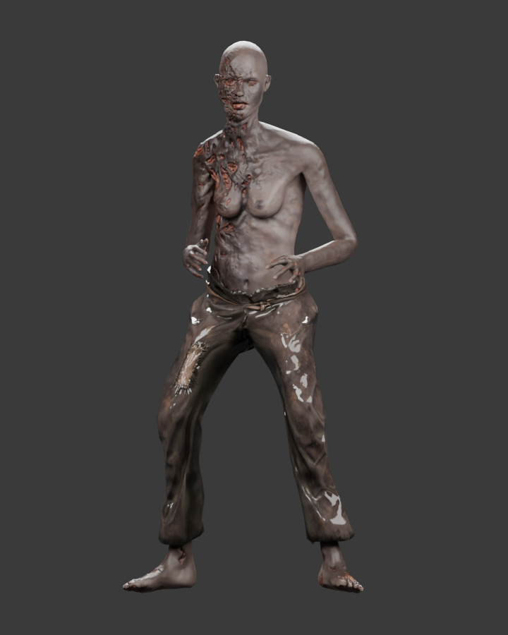
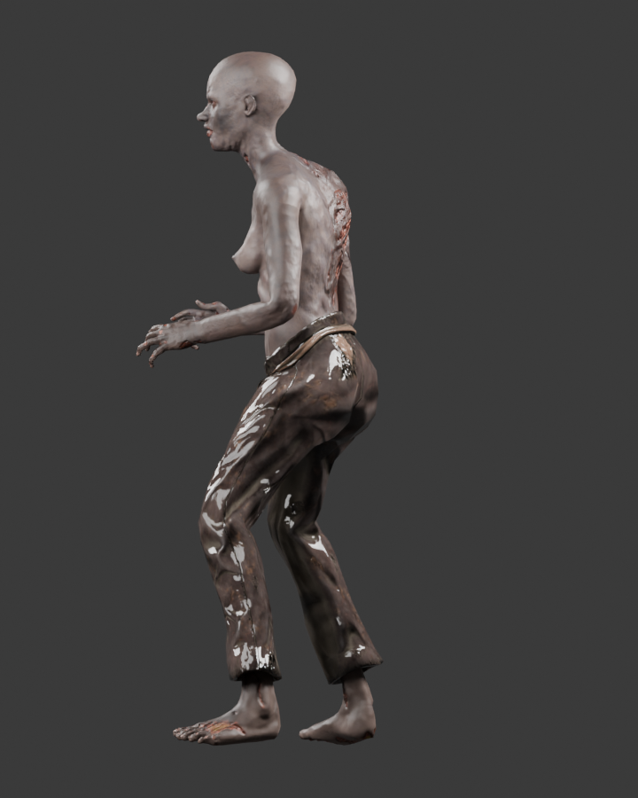
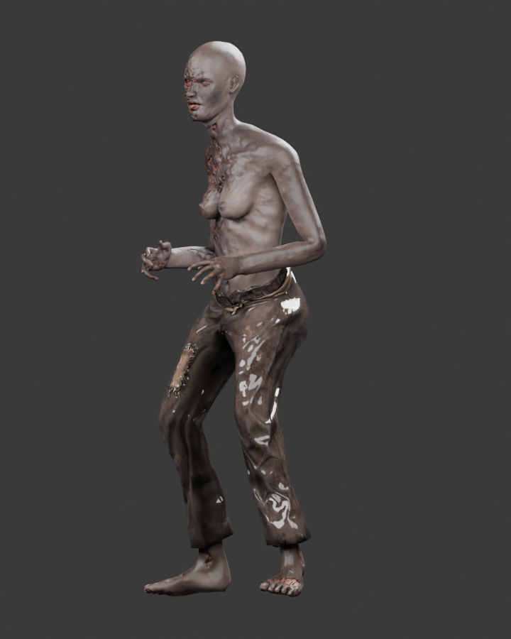

Original appearance by Tony Flanagan, Fab listing, CC BY 4.0. The source column is the normalized supplied geometry before reduction and texture compression. All three columns use the same neutral browser studio. Desktop: 5,867 triangles. Mobile: 1,855 triangles. Visual approval remains open.
Validation report · Mobile gameplay · Stagger · Critical / victory · Death
Read-only Cycles captures of the saved master. Lighting and tone mapping differ from the browser studio; use the three-column comparison above to assess reduction and compression.


